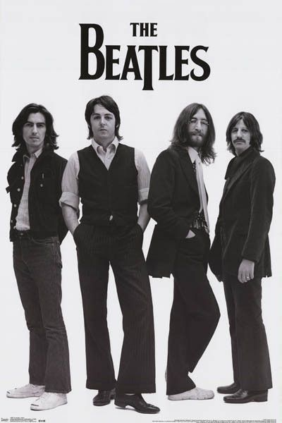

The term “pop” was termed as popular music. The type of music often liked by most people. It is noticed and considered mainstream by most people around the world thus its known term Pop. The style of song has the same structure of music from the medieval entertainers/musicians and poetries which follows their elements on the art of music but originally intended for a small group of listeners but popularly known today. This type of music is often recognized in patterns or rhythms making it easy to know when heard by the public which results in the songs from the mentioned genre being likeable and memorable. The lyrics of the songs that are composed are considered short followed by a few verses and a chorus that is repeated mostly occurs at the end of each verse. Pop music was made in Britain in the 1950s. The genre was derived from another style of music called rock and roll.
|  | |
| "Can't Help Falling In Love" by Elvis Presley | "Come Together" by The Beatles |
There are well known artists / bands that contributed to the genre in the early years such as Elvis Presley despite his title as the King of Rock n Roll made his song “Can’t Help Falling in Love” which is marked as one of the greatest romantic songs of history. The song has a lullaby style to serenade mostly used or played in wedding songs to-date. To the song’s intention, it mainly speaks about the singer's feelings towards his lover or someone he/she likes and describing that it cannot be contained hence, uncontrollable expressed in the lyrics and title of the song, “Can’t help falling in love”. The song continues the message to describe that they are meant to be for each other and hence take his hand and ride with him to the forever sunsets. Another popular song in the early 70s was "Come Together" and a few other well known songs from a band called The Beatles. It was inspired by a request from Timothy Leary, best known as the “turn on, tune in, drop out” advocate of LSD who had become such a popular pied piper of psychedelics that Richard Nixon labelled him “the most dangerous man in America”. He requested to write a song for his campaign for governor of California against Ronald Reagan, which promptly ended when Leary was sent to prison for possession of marijuana. John Lennon recalled: The thing was created in the studio.
There are currently famous artists that make pop songs in 2020 such as Justin Bieber “Intentions” which is a collaboration with Quavo that was made for Justin’s 13th and Quavo’s 6th Top Ten song on the Billboard Hot 100. Both artists well performed their songs with sharpness and nice vocal tones. Taylor Swift’s “Cardigan” which is considered as the best song from her latest album. The mentioned artist approached the song that lives each line like an actress playing every scripted word with all of its cutting and romantic meaning. All of which hits a resounding echo with her now-signature vocal flourish, reaching high notes in a sultry fashion.
| "Intentions" by Justin Bieber | "Cardigan" by Taylor Swift |